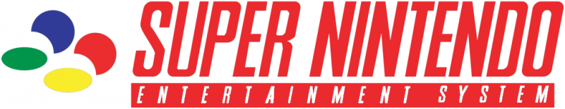

1. Primeira Geração (1972-1980):
Magnavox Odyssey os games. 
• Crazy Chase de K.C!
• Escolha Axe Pete!
• Frogger - 1982
Obs:Tive a oportunidade de jogar ele apenas em emulador de computador.
Emuladores do Magnavox
Abaixo o link do emulador, onde sempre tenho a oportunidade de lembrar dos velhos tempos eu dou uma jogadinha.
• Emulador: Magnavox
2. Segunda Geração (1976-1992):
Atari 2600 os games. 
• Pac-Man
• Space Invaders
• Asteroids
Obs:Este console tive em minha casa, um dia testei o controle do Mega Drive e funcionou tranquilamente.
Emuladores do Atari 2600
Abaixo o link do emulador.
• Emulador: Atari 2600
Intellivision os games.
• Advanced Dungeons & Dragons
• BurgerTime
• Pitfall
Obs:Tive a oportunidade de jogar ele apenas em emulador de computador.
Emuladores do Intellivision
Abaixo o link do emulador.
• Emulador: Intellivision
3. Terceira Geração (1983-2003):
Nintendo Entertainment System (NES) os games. 
• Super Mario Bros
• The Legend of Zelda
• Metroid
Obs:Este console tive em minha casa, mas era o TurboGame.
Emuladores do NES
Abaixo o link do emulador.
• Emulador: NES
Sega Master System os games.
• Alex Kidd in Miracle World
• Phantasy Star
• Wonder Boy
Obs:Tive a oportunidade de jogar ele apenas em emulador de computador.
Emuladores do Master System
Abaixo o link do emulador.
• Emulador: Master System
4. Quarta Geração (1987-2004):
Super Nintendo Entertainment System (SNES) os games. 
• Super Mario World
• The Legend of Zelda: Alink to the Past
• Super Metroid
Obs:Este console tive em minha casa, muitas horas em frente a televisão.
Emuladores do SNES
Abaixo o link do emulador.
• Emulador: SNES
Sega Genesis (Mega Driver no Brasil) os games.
• Sonic the Hedgehog
• Street of Rage
• Phantasy Star IV
Obs:Este console tive em minha casa, muitas horas em frente a televisão.
Emuladores do Genesis / Mega Drive
Abaixo o link do emulador.
• Emulador: Genesis/Mega Driver
5. Quinta Geração (1993-2006):
Sony PlayStation 1 os games. 
• Final Fantasy VII
• Metal Gear Solid
• Gran Turismo 1 e 2
Obs:Este console tive em minha casa.
Emuladores do Playstation 1
Abaixo o link do emulador.
• Emulador: Playstation 1
Nintendo 64 os games.
• The Legend of Zelda: Ocarina of Time
• GoldenEye 007
• Super Mario 64
Obs:Este console tenho em minha casa, muitas horas em frente a televisão quando pequeno, e tenho guardado de lembraça.
Emuladores do Nintendo 64
Abaixo o link do emulador.
• Emulador: Nintendo 64
Sega Saturn os games.
• Panzer Dragoon
• Street Fighter Alpha 2
• Resident Evil
Obs:Este console tenho em minha casa, joguei pouco no console joguei bastante no pc, achei o controle original ruin, guardado de recordação.
Emuladores do Sega Saturn
Abaixo o link do emulador.
• Emulador: Sega Saturn
6. Sexta Geração (1998-2013):
Sony PlayStation 2 os games. 
• Final Fantasy X
• Metal Gear Solid 3
• Castlevania
• Gran Turismo 4
Obs:Este console tive em minha casa, passei horas jogando Castlevania, Final Fantasy X.
Emuladores do Playstation 2
Abaixo o link do emulador.
• Emulador: Sony Playstation 2
Microsoft Xbox os games.
• Halo: Combat Evolved
• Fable
• Forza
Obs:Este console nunca tive a oportunidade de ter, e jogar em console, apenas em emulador.
Emuladores do Xbox Classic
Abaixo o link do emulador.
• Emulador: Microsoft Xbox
Nintendo Game Cube os games.
• Super Smash Bros Melee
• The Legend of Zelda: the Wind Waker
• Metroid Prime
Obs:Este console tenho em minha casa, joguei pouco no console joguei bastante no pc, achei o controle original ruin, guardado de recordação.
Emuladores do Nintendo Game Cube
Abaixo o link do emulador.
• Emulador: Nintendo Game Cube
7. Sétima Geração (2005-2017):
Microsoft Xbox 360 os games. 
• Gears of War
• Mass Effect
• Halo 3
• Forza
Obs:Este console tenho em minha casa, ainda jogo alguns games do Xbox 360.
Emuladores do Xbox 360
Abaixo o link do emulador.
• Emulador: Microsoft Xbox 360
Sony Playstation 3 os games.
• Crysis
• Gran Turismo 6
• Metal Gear Solid 4: Guns of the Patriots
Obs:Este console tenho em minha casa, ainda jogo alguns games do Playstation 3.
Emuladores do Playstation 3
Abaixo o link do emulador.
• Emulador: Sony Playstation 3
Nintendo Wii os games.
• Super Smash Bros Brawl
• The Legend of Zelda: Twilight Princess
• Metroid Prime: Trilogy
Obs:Este console tenho em minha casa, joguei pouco no console joguei bastante no pc, achei o controle original ruin, guardado de recordação.
Emuladores do Nintendo Wii
Abaixo o link do emulador.
• Emulador: Nintendo Wii
8. Oitava Geração (2012-atualmente em 2020):
Microsoft Xbox One os games. 
• Gears of War 5
• Halo 5
• Forza Horizon 4
Obs:Este console nunca joguei, mas Forza Horizon 4 joguei no PC.
Emuladores do Xbox One
Abaixo o link do emulador.
• Emulador: Microsoft Xbox One Não tem emulador
Sony Playstation 4 os games.
• The Last of Us Part II
• God of War (2018)
• Metal Gear Solid 4: Guns of the Patriots
Obs:Este console eu nunca joguei aguardo um emulador rs.
Emuladores do Playstation 4
Abaixo o link do emulador.
• Emulador: Sony Playstation 4
Nintendo Wii U os games.
• The Legend of Zelda: Breath of the Wild
• New Super Mario Bros. U
• Zombi U
Obs:Este console tinha em minha casa, joguei muito, me diverti bastante com o controle de tela o Gamepad.
Emuladores do Nintendo Wii U
Abaixo o link do emulador.
• Emulador: Nintendo Wii U
Nintendo Switch os games.
• Mario Kart 8
• Super Mario Odyssey
• Super Smash Bros Ultimate
Obs:Este console tenho jogo em emulador, até que funciona bem, gosto bastante dos games.
Emuladores do Nintendo Switch
Abaixo o link do emulador.
• Emulador: Nintendo Switch